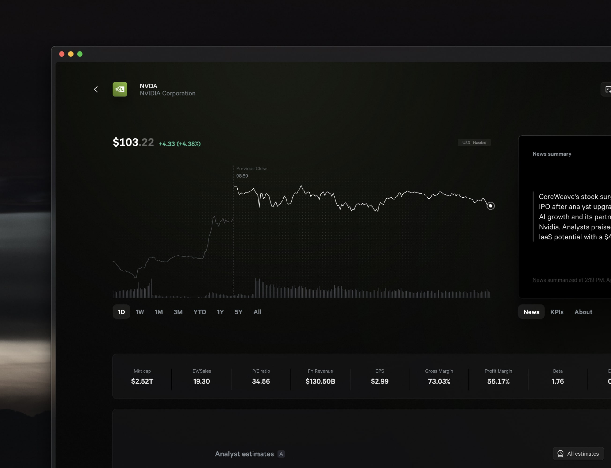
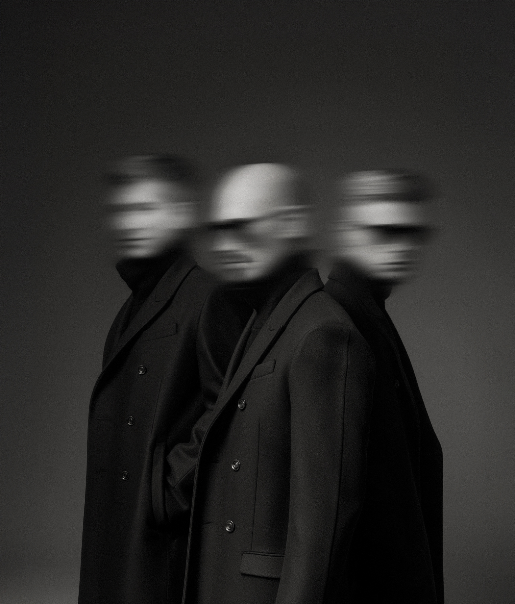

At Maple VC, we don't just invest early. We invest first. We invested in Fey in 2021. Today, Fey was acquired by Wealthsimple — a fitting milestone for a company that set out to give self-directed investors institutional-grade tools.

We built Maple on a belief: the best seed investors recognize greatness before the data can prove it. Fey is one of those stories. Our journey with the founders started years before the acquisition, when Fey was nothing more than an idea being quietly built out of a design studio in Montreal.
The Talent Framework
We believe every great company is built by a combination of three archetypes: Inventors spark breakthrough ideas. Builders attract people and capital. Operators scale the systems that turn products into enduring companies. In our experience, if a founding team includes a Builder, the other archetypes follow. Fey's founders showed us that balance from day one.
Dennis — Engineering / Inventor
The engineering backbone. Dennis never planned on becoming an engineer. With a background in psychology, his interest was first in people, not machines. But when he built tools for himself, he discovered the power of code — not just to digitize an idea, but to expand what ideas are possible in the first place. Treating engineering as a creative force gave Fey the technical foundation it needed to succeed.
Thiago — Product / Builder
The product craftsman. Raised by a doctor and an artist, he learned early that art and science work together to shape how people live and feel. Obsessed with detail and quality, he spent his career building brands and products at every stage, from early startups to public companies. That mix of taste, discipline, and experience became exactly what Fey needed to feel inevitable.
Tom — Operator / Builder
A natural Operator with commercial instincts. He began trading young, and by his teens had built a financial newsletter that grew to 30,000 subscribers. That entrepreneurial streak carried into new ventures — where he taught himself to code and build the very products he envisioned. That blend of market instinct and technical ability gave Fey the edge it needed to reach ambitious investors early.
Mack — Product / Operator
The connector and commercial driver. With 15+ years across product, operations, and sales, Mack brought the discipline to commercialize Fey and the instincts to forge early partnerships. He helped transform Fey from a design-studio project into a venture-backed company.
Together, the four founders formed the rare mix we look for: business, product, and tech working in unison from day zero. And crucially, they proved it without outside capital. For 2.5 years, they bootstrapped Fey through their design studio Narative, building a product that looked like it came from a 30-person team — when in reality it was four founders grinding nights and weekends. That kind of discipline is the Builder energy we back first.
The Investment Framework
Why We Wrote the First Check
We were introduced to Fey's founders in 2019 by fellow Canadian Peter Bailey. Over the next two years, we built a relationship: regular calls, product demos, design debates. By the time they were ready to raise, Fey's founders called us first.
We had conviction not just in the market tailwinds or the product elegance, but in the people. We fell in love with their secret — that Fey could make retail investors profitable, contrary to what most believed. That secret revealed who they are at their core: bold in their belief systems, contrarian in their ambitions, and unafraid to tackle challenges others dismissed.
That's why we led Fey's C$3M seed round, inviting Inovia to co-lead.
"We said yes to Maple's investment because we knew reaching more people required the right partner. Andre wasn't just capital — he brought relationships that could open doors, and he believed in us as people before the idea was proven. That founder-first conviction made the decision easy."
Fey Founding Team
Where Fey is Headed
Fey's ambition was always bigger than trading dashboards. Their vision was to give retail investors the same superpowers as institutions — tools to research, document, and execute with rigor.
The acquisition by Wealthsimple marks the beginning of that vision reaching scale. Together, they can bring these workflows to millions more across North America. And while we would have loved for Fey to go all the way, the combination of Fey and Wealthsimple felt like the best way to maximize the chance of fulfilling that ambition.
For us, it validates the belief we had years ago: that a design-first team of Builders in Montreal could change the way retail investors trade. We're proud to have been Fey's first believer. At Maple VC, First Check isn't just about investing early. It's about backing Builders before the world sees what they see.